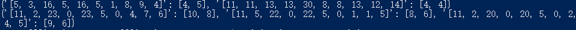
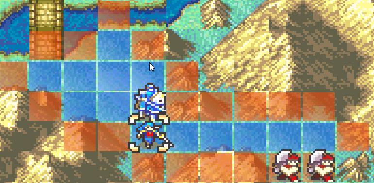
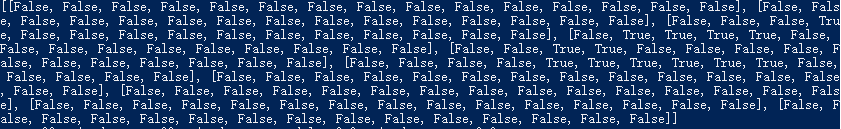

This week, I have made a lot more progress on the project than the last week. I started the week by again attempting to figure out mGBA and the Python binding. After a lot of attempts trying multiple methods of compiling and installing it, including through docker, through msys2, through cmake+make, through pip, and getting stopped by different error in each method, wasting a lot of time, I finally realized that I can just assume that it does not really support Python. In its update notes it only mentions partial support for Python. There is barely any documentation regarding Python. And for the ones that are there, they are simply outdated.
After deciding to simply abandon mGBA, I decided to go back to Retro and check how its source code in C++ QT is written. Fortunately, I was able to quickly find out that its Python binding is in fact a lot more well written than I previously expected, though it is not documented anywhere, the source code actually wrote binding for everything I need and I can simply use them directly. It is a shame though that I am only able to figure this out after digging through the source code and the documentation is so poorly written that it is barely helpful. If I have time I may be able to update the documentation to clarify my finding.
After finally figuring out how to emulate via python correctly, I started to write the whole framework of my program, and I was able to finish several key functions needed.

The first one as shown, is the unit check function. I was able to revise my previous considered implementation as I foundt about the movement memory address. So I can just iterate through the stats screen of each friendly unit and enemy unit and then I will be able to know the position and strength of each unit easily. This is much quicker than the previous brute through the whole map approach. In order to make sure I moved to an enemy unit, I used the status menu function to make sure the cursor will move to an enemy.
Shown here is the information gained in Python after the scanning. As you can see, there is a lacking of data structure currently, but the key is all the stats of the units and the value here is the corresponding position of the units.
After that, I started doing movement calculation of the friendly unit, another important thing that is key to the program. What I did was a simple prototype. I entered the map information manually, whcih was not difficult since the map is only 15 by 10. After that, with the current position and movement stat of a friendly unit, I used a brute-forceish implementation to do the prototyping of movement calculation. I made sure that enemy units are also counted as obstacle and just updated the movement cost to each space repeatedly until it stops changing. The results are shown below. As you can see, the calculated movement and the actual movement matches, showing that the approach while naive, is in fact correct.
 With the most important thing figured out, I can finally start my main step of training the network. Conveniently, I am currently working in gym retro environment so I can perhaps borrow some code from gym as the starting point.